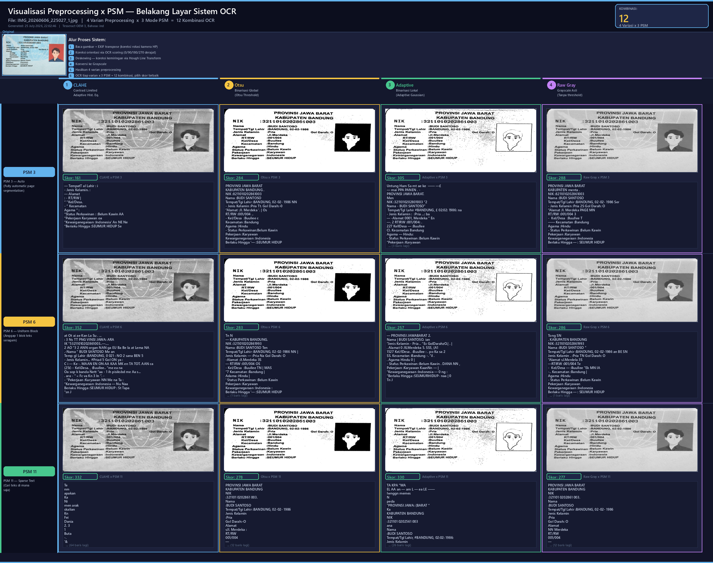
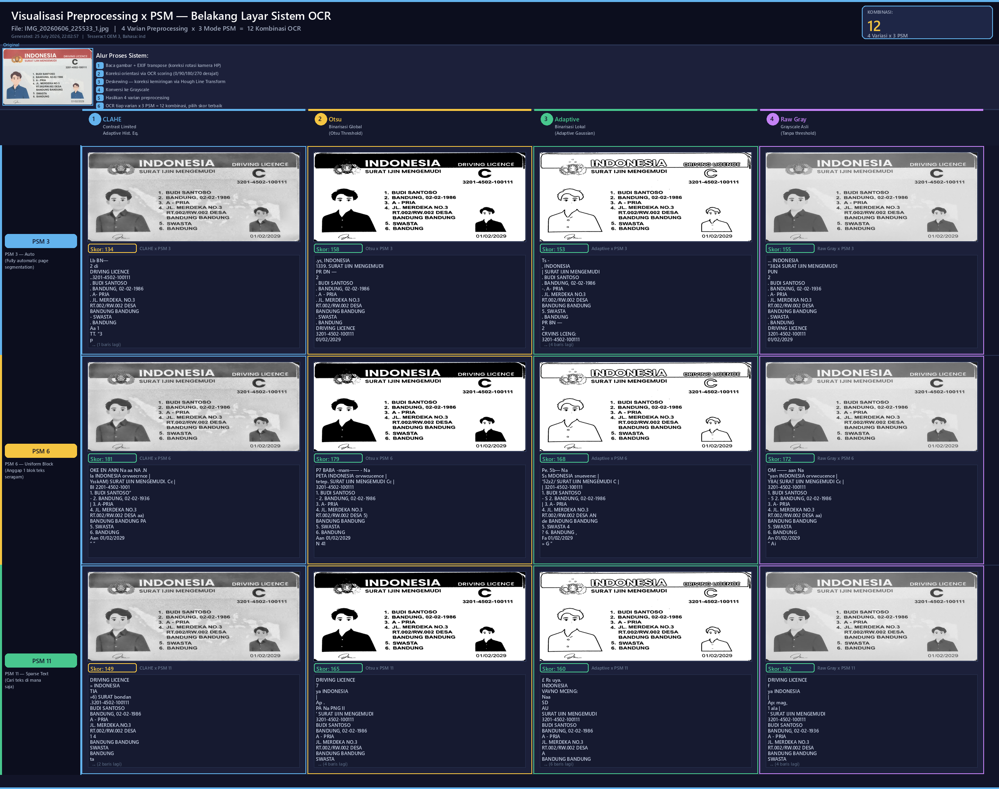
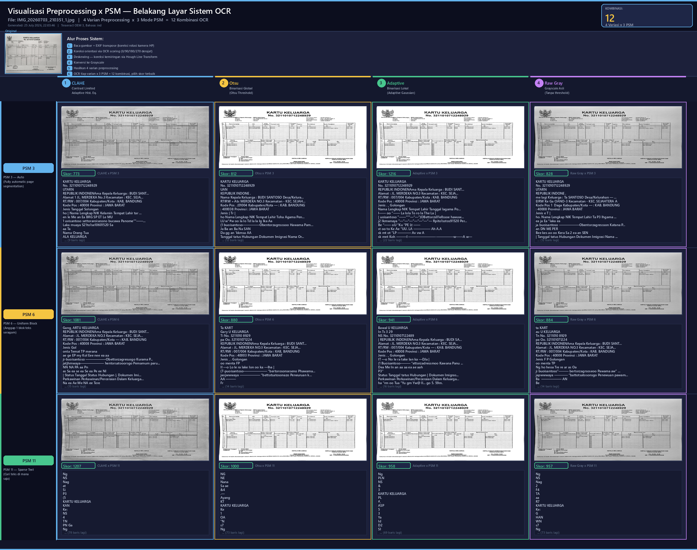

Dokumentasi visual bagaimana sistem memproses setiap gambar dokumen (KTP/SIM/KK) menggunakan 4 varian preprocessing citra dikombinasikan dengan 3 mode PSM Tesseract, menghasilkan 12 kombinasi OCR per gambar.
Contrast Limited Adaptive Histogram Equalization
Meningkatkan kontras lokal pada setiap tile (16x16 px). Efektif untuk pencahayaan tidak merata.
Parameter: clipLimit=2.5, tileGridSize=(16,16).
Binarisasi Global Otsu
Memilih threshold binarisasi optimal dari histogram intensitas global.
Menghasilkan gambar hitam-putih. Kode: THRESH_BINARY + THRESH_OTSU.
Binarisasi Lokal Adaptif
Tiap area kecil punya threshold sendiri. Didahului denoising
(fastNlMeansDenoising). Efektif untuk pencahayaan tidak merata.
Baseline tanpa enhancement
Konversi BGR ke grayscale langsung. Digunakan sebagai baseline perbandingan.
Kode: cv2.COLOR_BGR2GRAY.
Tesseract melakukan segmentasi halaman penuh dan otomatis (OSD + layout detection). Baik sebagai fallback umum dan untuk KK berbentuk tabel multi-kolom.
Tesseract mengasumsikan gambar adalah satu blok teks seragam. Optimal untuk KTP/SIM yang memiliki field terstruktur dan rapi.
Tesseract mencari teks di mana saja tanpa asumsi layout. Efektif untuk dokumen dengan teks tersebar, tidak dalam blok rapat.

Klik untuk zoom. Grid 4x3: semua kombinasi preprocessing x PSM
| Preprocessing | Mode PSM | Skor | Teks OCR |
|---|---|---|---|
| CLAHE | PSM 6 Uniform | 352 * TERBAIK | at Ot ai ae Kan La Su . ... : 3 Ns TT PNG VINSI JAWA: ARA IK “53211010202861003..—.... 2 AO “3 2 ANN organ NAN ga EU Ba Be Ia at Lema NA .-Nama “ BUDI SANTOSO Me an Temp gl Lahir :BANDUNG, 0 021 : NO 2 sana BEN 5 - Jenis Kelamin... #Priad 5 Gol ON ya : C i — Ke -. MAAN EN ON AA KAA MK en TA TOT. AAN... |
| CLAHE | PSM 11 Sparse | 332 | Te nm apakan Ka Ni men arak skalian Kn Fei Dania 2. 3 1 Buta -. '& K y) Sa B Patuh Ke Ka ENB atas Pena NIK - 321101 86100 3 AN BUDI! SANT aU OP . Usa - Tempatit gl Lahir) BANDUNG 02 Ui - Jenis Kelamin. : “Pri at a aki &. 2 — Alamat Ji.Merd eka: Axa PP... |
| Adaptive | PSM 11 Sparse | 330 | TA KPA “WA EL AA an — am L — ea LE —— Iwnggn memes N peda “PROVINSI JAWA: (BARAT “ Ka KABUPATEN BANDUNG NIK :321101 0202561 003 ana Nama :BUDI SANTOSO Tempat/Tgl Lahir, #BANDUNG, 02:02: 1986: Jenis Kelamin Pria 7 “Gol Darah SNN -Alamat Jl. Merdeka " aa RT/RW :001/004: - Naa T... |
| Adaptive | PSM 3 Auto | 305 | Untung Ham Sa mt ae ke —— —£ — mai PPA PANEN . - PROVINSI JAWA BARAT. Men NIK :3211010202801003 “2 Nama - BUDI SANTOSO” Tempat/Tgl Lahir #BANDUNG, £ 02:02: 1986: na - Jenis Kelamin : :Pria ...: ba — -Alamat 0001, Merdeka " En —. 2 RTIRW :001/004: . 227 KellDesa — :Buullee CI. Kecamatan Bandu... |
| Raw Gray | PSM 3 Auto | 288 | PROVINSI JAWA BARAT KABUPATEN menta . NIK :8211010202861003 Nama :BUDI SANTOSO Tempat/Tgl Lahir :BANDUNG, 02-02- 1986 Ser - Jenis Kelamin :Pria 2S Gol Darah: O “Alamat Jl. Merdeka PAGE MN RT/RW :001/004 3 - Kel/Desa :Buullee T —— Kecamatan :Bandung Agama :Hindu - Status Perkawinan :Belum Kawin Pe... |
| Raw Gray | PSM 6 Uniform | 286 | Tong SN . KABUPATEN BANDUNG NIK :3211010202861993 Nama :BUDI SANTOSO " Tempat/Tgl Lahir :BANDUNG, 02-02-1986 an BE SN Jenis Kelamin . :Pria TN Gol Darah: O “Alamat sJ.Merdela 3S —RTIRW :001/004 Te - Kel/Desa — :Buullee "Ek MN IA -.. Kecamatan :Bandung | Agama :Hindu - Status Perkawinan :Belum Kawin... |
| Otsu | PSM 3 Auto | 284 | PROVINSI JAWA BARAT KABUPATEN BANDUNG . NIK :8211010202861003 Nama :BUDI SANTOSO Tempat/Tgi Lahir :BANDUNG, 02-02- 1986 NN - Jenis Kelamin :Pria Tt. Gol Darah:-0 “Alamat :Jl. Merdeka '. | Os RT/RW :001/004 .. - Kel/Desa :Buuliee c Kecamatan :Bandung Agama :Hindu - Status Perkawinan:Belum Kawin Pek... |
| Otsu | PSM 6 Uniform | 283 | Tn N — KABUPATEN BANDUNG. NIK :3211010202861993 Nama :BUDI SANTOSO Ten Tempat/Tgl Lahir :BANDUNG, 02-02-1986 NN | Jenis Kelamin — :Pria Na Gol Darah: O -Alamat :Jl.Merdeka 3S — RTIRW :001/004 OS - Kel/Desa :Buullee TN | MAS “7 Kecamatan :Bandung | Adama :Hindu | ' Status Perkawinan :Belum Kawin Pek... |
| Otsu | PSM 11 Sparse | 278 | PROVINSI JAWA BARAT KABUPATEN BANDUNG NIK :321101 0202861 003. Nama :BUDI SANTOSO Tempat/Tgi Lahir :BANDUNG, 02-02- 1986 Jenis Kelamin :Pria Gol Darah:-O Alamat sJl. Merdeka : RT/RW 001/004 — Kel/Desa Buullee Kecamatan Bandung :Hindu Agama Status Perkawinan :Belum Kawin Pekerja... |
| Raw Gray | PSM 11 Sparse | 277 | PROVINSI JAWA BARAT KABUPATEN BANDUNG NIK :321101 0202861 003. Nama :BUDI SANTOSO Tempat/Tgl Lahir :BANDUNG, 02-02- 1986 Jenis Kelamin :Pria Gol Darah: O Alamat NN Merdeka RT/RW 001/004 — Kel/Desa Buullee Kecamatan Bandung :Hindu Agama Status Perkawinan :Belum Kawin Pekerjaan ... |
| Adaptive | PSM 6 Uniform | 257 | — PROVINSI JAWABARAT 2. Nama | BUDI SANTOSO. ian “Jenis Kelamin - Pria .. “Ec GolDarahzO.| . | . Alamat 0 JILMerdeka 5. SSS, (A1 1527 Kel/lDesa . :Buullee : . po Ka sa 2 SS. Kecamatan :Bandung -. “il . . Agama Hindu 0 | - Stafus Perkawinan :Belum Kawin . DANA NN , Pekerjaan :Karyawan KaanNn — | “Kew... |
| CLAHE | PSM 3 Auto | 161 | — TempatT al Lahir : i - Jenis Kelamin. : — Alamat : - RT/RW | “ “Kel/Desa. - “ Kecamatan Agama “ : “Status Perkawinan : :Belum Kawin AA “Pekerjaan Karyawan oa “Kewarganegaraan :Indonesia' An NE Ne “Beriaku Hingga :SEUMUR HIDUP Se |

Klik untuk zoom. Grid 4x3: semua kombinasi preprocessing x PSM
| Preprocessing | Mode PSM | Skor | Teks OCR |
|---|---|---|---|
| CLAHE | PSM 6 Uniform | 181 * TERBAIK | OKE EN ANN Na aa NA .N la INDONESIA orvwecrnce | YsskAM) SURAT IJIN MENGEMUDI. Cc | BI 2201-4502-1001 1. BUDI SANTOSO” - 2. BANDUNG, 02-02-1936 | 3. A-PRIA 4. JL. MERDEKA NO.3 RT.002/RW.002 DESA aa) BANDUNG BANDUNG PA 5. SWASTA 6. BANDUNG Aan 01/02/2029 “ ” |
| Otsu | PSM 6 Uniform | 179 | P7 BABA -mam—— - Na PETA INDONESIA orvwcucence | tetep. SURAT IJIN MENGEMUDI Cc | 3201-4502-100111 1. BUDI SANTOSO - 2. BANDUNG, 02-02-1986 3. A- PRIA 4. JL. MERDEKA NO.3 RT.002/RW.002 DESA 5) BANDUNG BANDUNG 5. SWASTA 6. BANDUNG Aan 01/02/2029 N 41 |
| Raw Gray | PSM 6 Uniform | 172 | OM —— aan Na "yan INDONESIA orvwcucence | Y8A( SURAT IJIN MENGEMUDI Cc | 3201-4502-100111 1. BUDI SANTOSO - 5 2. BANDUNG, 02-02-1986 3. A- PRIA 4. JL. MERDEKA NO.3 RT.002/RW.002 DESA aa) BANDUNG BANDUNG 5. SWASTA 6. BANDUNG An 01/02/2029 “ Ai |
| Adaptive | PSM 6 Uniform | 168 | Pe. 5b— Na Ss MDONESIA snuevene: | '52z2/ SURAT IJIN MENGEMUDI C | | 3201-4502-100111 1. BUDI SANTOSO - S 2. BANDUNG, 02-02-1986 | 3. A- PRIA 4. JL. MERDEKA NO.3 RT.002/RW.002 DESA AN de BANDUNG BANDUNG 5. SWASTA 4 ? 6. BANDUNG , Fa 01/02/2029 » G ” |
| Otsu | PSM 11 Sparse | 165 | DRIVING LICENCE 7 ya INDONESIA | Ap . PA Na PNG II ' SURAT IJIN MENGEMUDI 3201-4502-100111 BUDI SANTOSO BANDUNG, 02-02-1986 A - PRIA JL. MERDEKA NO.3 RT.002/RW.002 DESA BANDUNG BANDUNG SWASTA BANDUNG in As 01/02/2029 |
| Raw Gray | PSM 11 Sparse | 162 | DRIVING LICENCE f ya INDONESIA | Ap: mag, 1 ala | ' SURAT IJIN MENGEMUDI 3201-4502-100111 BUDI SANTOSO BANDUNG, 02-02-1936 A - PRIA JL. MERDEKA NO.3 RT.002/RW.002 DESA BANDUNG BANDUNG SWASTA BANDUNG ta 3. 01/02/2029 |
| Adaptive | PSM 11 Sparse | 160 | £ Rs uya. INDONESIA VAVNO MCENG: Naa SD AU SURAT IJIN MENGEMUDI 3201-4502-100111 BUDI SANTOSO BANDUNG, 02-02-1986 A - PRIA JL. MERDEKA NO.3 RT.002/RW.002 DESA A BANDUNG BANDUNG SWASTA BANDUNG DN FA 01/02/2029 ” |
| Otsu | PSM 3 Auto | 158 | .ys, INDONESIA 1339. SURAT IJIN MENGEMUDI PR DN — 2 . BUDI SANTOSO . BANDUNG, 02-02-1986 . A - PRIA . JL. MERDEKA NO.3 RT.002/RW.002 DESA BANDUNG BANDUNG . SWASTA . BANDUNG DRIVING LICENCE 3201-4502-100111 01/02/2029 |
| Raw Gray | PSM 3 Auto | 155 | ... INDONESIA "3824 SURAT IJIN MENGEMUDI PUN 2 . BUDI SANTOSO . BANDUNG, 02-02-1936 . A- PRIA . JL. MERDEKA NO.3 RT.002/RW.002 DESA BANDUNG BANDUNG . SWASTA . BANDUNG DRIVING LICENCE 3201-4502-100111 01/02/2029 |
| Adaptive | PSM 3 Auto | 153 | Ts - , INDONESIA | SURAT IJIN MENGEMUDI . BUDI SANTOSO . BANDUNG, 02-02-1986 -. A- PRIA . JL. MERDEKA NO.3 RT.002/RW.002 DESA BANDUNG BANDUNG 5. SWASTA . BANDUNG PR BN — 2 CRVINS LCENG: 3201-4502-100111 ( » | « | 2» 01/02/2029 |
| CLAHE | PSM 11 Sparse | 149 | DRIVING LICENCE » INDONESIA TIA »6) SURAT bondan .3201-4502-100111 BUDI SANTOSO BANDUNG, 02-02-1986 A - PRIA JL. MERDEKA.NO.3 RT.002/RW.002 DESA 1 4 BANDUNG BANDUNG SWASTA BANDUNG ta "2. 01/02/2029 |
| CLAHE | PSM 3 Auto | 134 | Lb BN— 2 di DRIVING LICENCE ..3201-4502-100111 . BUDI SANTOSO . BANDUNG, 02-02-1986 . A- PRIA . JL. MERDEKA. NO.3 RT.002/RW.002 DESA BANDUNG BANDUNG - SWASTA . BANDUNG Aa 1 TT. “3 p 01/02/2029 |

Klik untuk zoom. Grid 4x3: semua kombinasi preprocessing x PSM
| Preprocessing | Mode PSM | Skor | Teks OCR |
|---|---|---|---|
| Adaptive | PSM 3 Auto | 1216 * TERBAIK | KARTU KELUARGA No. 3211010712248929 REPUBLIK INDONENAma Kepala Keluarga : BUDI SANTOSO Desa/Kelurahan — : DESA MAJU A Alamat : JL. MERDEKA NO.3 Kecamatan : KEC. SEJAHTERA A RT/RW : 007/004 Kabupaten/Kota : KAB. BANDUNG Kode Pos : 40008 Provinsi : JAWA BARAT Jenis . , Golongan Nama Lengkap NIK Temp... |
| CLAHE | PSM 11 Sparse | 1207 | Ng NS Nag at Si P3 (5 KARTU KELUARGA KAN Ke: NS 4 TN PN Ga Ng No. 3211010712248929 REPUBLIK INDONENAma Kepala Keluarga : BUDI SANTOSO Desa/Kelurahan DESA MAJU A Alamat JL. MERDEKA NO.3 Kecamatan KEC. SEJAHTERA A RT/RW 007/004 Kabupaten/Kota KAB. BANDUNG Kode Pos 40008 JA... |
| CLAHE | PSM 6 Uniform | 1081 | Gang, ARTU KELUARGA REPUBLIK INDONENAma Kepala Keluarga : BUDI SANTOSO Desa/Kelurahan — : DESAMAJUA Alamat : JL. MERDEKA NO.3 Kecamatan : KEC. SEJAHTERA A RT/RW : 007/004 Kabupaten/Kota — : KAB. BANDUNG Kode Pos : 40008 Provinsi : JAWA BARAT Jenis Gol onta Temat TP merana ae ge EP my Kol Eee nee ea ... |
| Otsu | PSM 11 Sparse | 1000 | NG NE Nana Sa ae &4 .— Ayang KT KARTU KELUARGA Ke 1 OA ”N s7 Ng AN No. 3211010712248929 KEPUBLIK INDONENAma Kepala Keluarga : BUDI SANTOSO Desa/Kelurahan DESA MAJU A Alamat JL. MERDEKA NO.3 Kecamatan KEC. SEJAHTERA A RT/RW 007/004 Kabupaten/Kota KAB, BANDUNG Kode Pos 400... |
| Adaptive | PSM 11 Sparse | 958 | Ng PLN NS & 3 KARTU KELUARGA PL #, ASP 5 3 Ya Id D2 SI UAAN VE) No. 3211010712248929 REPUBLIK INDONENAma Kepala Keluarga : BUDI SANTOSO Desa/Kelurahan DESA MAJU A Alamat JL. MERDEKA NO.3 KEC. SEJAHTERA A RT/RW Kecamatan 0071004 Kabupaten/Kota KAB. BANDUNG Kode Pos 40008... |
| Raw Gray | PSM 11 Sparse | 957 | Ng NS Nag 2 F4 TA aa R7 KARTU KELUARGA Ke: G HAN WN s7 Ng AN No. 3211010712248929 REPUBLIK INDONENAma Kepala Keluarga : BUDI SANTOSO Desa/Kelurahan DESA MAJU A Alamat JL. MERDEKA NO.3 Kecamatan KEC. SEJAHTERA A RT/RW 007/004 Kabupaten/Kota KAB. BANDUNG Kode Pos 40008 JA... |
| Adaptive | PSM 6 Uniform | 941 | Bawal U KELUARGA In Ts 3 29 NS No. 32110107122489 | REPUBLIK INDONENAma Kepala Keluarga : BUDI SANTOSO Desa/Kelurahan — : DESA MAJU A Alamat : JL. MERDEKA NO.3 Kecamatan : KEC. SEJAHTERA A RT/RW : 007/004 Kabupaten/Kota — : KAB. BANDUNG Kode Pos : 40008 Provinsi : JAWA BARAT Jenis . , Golongan IT —o... |
| Raw Gray | PSM 6 Uniform | 884 | ta KART au U KELUARGA Tn No. 3211010 8929 pa Oo. 321101071224 REPUBLIK INDONENAma Kepala Keluarga : BUDI SANTOSO Desa/Kelurahan : DESA MAJU A Alamat : JL. MERDEKA NO.3 Kecamatan : KEC. SEJAHTERA A RT/RW : 007/004 Kabupaten/Kota : KAB. BANDUNG Kode Pos : 40008 Provinsi : JAWA BARAT Jenis F P Golongan... |
| Otsu | PSM 6 Uniform | 880 | Ta KART Gary U KELUARGA Ti No. 3211010 8929 pa Oo. 321101071224 KEPUBLIK INDONENAma Kepala Keluarga : BUDI SANTOSO Desa/Kelurahan : DESA MAJU A Alamat : JL. MERDEKA NO.3 Kecamatan : KEC. SEJAHTERA A RT/RW : 007/004 Kabupaten/Kota : KAB, BANDUNG Kode Pos : 40003 Provinsi : JAWA BARAT Jenis , . Golong... |
| Raw Gray | PSM 3 Auto | 828 | KARTU KELUARGA No. 3211010712248929 UTARN REPUBLIK INDONE . me lagi Keluarga : Ta SANTOSO Desa/Kelurahan — : DESA MAJU A EIRW Ke Ga OANO-3 Kecamatan - KEC. SEJAHTERA A Kode Pos 1 Daga Kabupaten/Kota — : KAB. BANDUNG : 40008 Provinsi : JAWA BARAT Jenis e T | ho. Nama Lengkap NIK Tempat Lahir Ta P3 ... |
| Otsu | PSM 3 Auto | 812 | KARTU KELUARGA No. 3211010712248929 UAN KEPUBLIK INDONE . Nama Kepala Keluarga : BUDI SANTOSO Desa/Kelurahan — : DESA MAJU A RTIRW » Ab: MERDEKA NO.3 Kecamatan - KEC. SEJAHTERA A Kode Pos . (01004 Kabupaten/Kota — : KAB. BANDUNG : 400038 Provinsi : JAWA BARAT Jenis | Tr | ho Nama Lengkap NIK Tempat... |
| CLAHE | PSM 3 Auto | 773 | KARTU KELUARGA No. 3211010712248929 UTARN REPUBLIK INDONENAma Kepala Keluarga : BUDI SANTOSO Desa/Kelurahan — : DESA MAJU A Alamat 1 JL. MERDEKA No.3 Kecamatan : KEC. SEJAHTERA A RT/RW : 007/004 Kabupaten/Kota : KAB, BANDUNG Kode Pos : 40008 Provinsi : JAWA BARAT Jenis Tanggal Solongan ho | Nama L... |